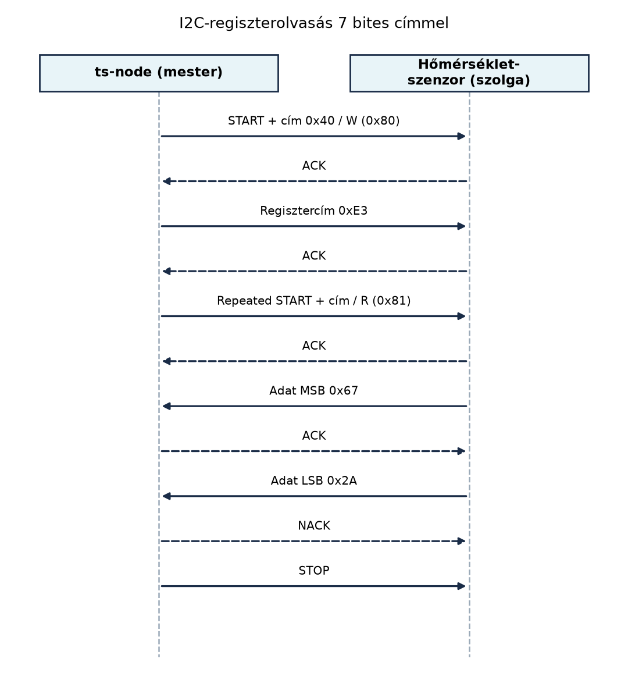

A TerraSense ts-node egységének egyetlen feladata, hogy
néhány szenzort olvasson, egy szelepet kapcsoljon, és az eredményt
eljuttassa a gatewayhez. Aki eddig Linuxon socketekkel, fájlokkal és
könyvtári függvényekkel dolgozott, ott a periféria szinte mindig „kész”;
egy mikrovezérlőn viszont a GPIO, az I2C vagy az ADC közvetlenül,
harderszinten jön szembe. Ebben az alfejezetben a leggyakoribb
perifériákat és buszokat tekintjük át a szenzorillesztés szempontjából.
A cél, hogy egy adott érzékelő adatlapját látva el tudd dönteni, melyik
buszra érdemes kötni, és egy I2C-tranzakciót bájtszinten is értelmezni
tudj.
Definíció. A GPIO (General-Purpose Input/Output) a mikrovezérlő olyan lába, amelyet szoftveresen ki- vagy bemenetnek konfigurálhatunk, és amely általában más perifériaként is használható. Kimenetként logikai magas vagy alacsony szintet ad, bemenetként pedig a láb feszültségszintjét olvassa vissza.
Egy GPIO-kimenet leggyakrabban push-pull: a láb aktívan húzza magasra vagy alacsonyra. Ezzel szemben open-drain kimenet esetén a láb csak alacsonyra húz, magas szintet egy külső felhúzó ellenállás állít be. Az open-drain azért hasznos, mert több eszköz is ráköthető ugyanarra a vezetékre, és a nyugalmi szintet bármelyikük le tudja húzni. Hátránya, hogy a felhúzó ellenállás nélkül a vezeték lebeg, ezért a logikai szint nem definiált.
Bemenetnél hasonló a helyzet: ha nincs külső vagy belső felhúzó
(pull-up) vagy lehúzó (pull-down) ellenállás, akkor egy nyitott
kapcsolóval kötött bemenet véletlenszerűen olvashat 0-t vagy 1-et. A
Zephyr GPIO API-ja ezt a pull-up, pull-down
vagy high-impedance beállítással kezeli; a pontos API-nevek
a Devicetree és Kconfig: a hardver és a konfiguráció
leírása alfejezetben szereplő devicetree-hez igazodnak.
A TerraSense öntözőszelepét nem közvetlenül egy GPIO-láb táplálja, hanem egy relé- vagy félvezetős kapcsolómodul vezérlőbemenete. Így a mikrokontroller csak a vezérlőjelet adja, a nagyobb áramú áramkört a modul választja le.
Definíció. Az UART (Universal Asynchronous Receiver/Transmitter) pont-pont soros kommunikáció, amelyen az adatbitkeket közös órajel nélkül viszik át; a vevő a saját órajelével veszi mintát, ezért a küldő és a vevő sebességét előre, pontosan kell ismerni. A keret általában egy startbitből, 7–9 adatbitből, opcionális paritásbitből és egy stopbitből áll.
A UART előnye az egyszerűség: két adatvezeték (TX, RX) és közös föld
elég. Hátránya, hogy nincs protokollszintű címzés, nyugtázás vagy flow
control, hacsak külön nem építjük be. Tipikus sebességei a beágyazott
rendszerekben néhány ezer bit/s-tól néhány millió bit/s-ig terjednek; a
legfontosabb gyakorlati buktató, hogy a baud rate a
bitsebességet jelenti, nem a bájtsebességet.
A TerraSense konzolja UART-on keresztül beszél a fejlesztői gazdagéppel. Ugyanezt a perifériát gyakran használják GPS-vevők, AT-parancsos modemek vagy egyszerű távolságmérő modulok illesztésére.
Definíció. Az I2C (Inter-Integrated Circuit) kétvezetékes, órajelt vezérelt, mester-szolga architektúrájú busz. Az SDA (Serial Data) vezeték viszi a cím- és adatbiteket, az SCL (Serial Clock) a mester által kiadott órajelet. A szolga válasza a nyugtázó bit (ACK/NACK). A busz open-drain felépítésű, ezért mindkét vezetékhez külső felhúzó ellenállás kell.
A gyakorlatban az I2C a szenzorok legnépszerűbb busza, mert sok
eszköz köthető ugyanarra a két vezetékre, mindegyiknek saját 7 bites
(ritkábban 10 bites) címe van. A 7 bites címet az eszközgyártók gyakran
bináris, hexadecimális vagy 8 bites formában is megadják, ami tipikus
féleértések forrása: a buszra a mester által küldött első bájt a 7 bites
cím balra tolva, a legalsó bit pedig írás/olvasás jelzés. Egy 7 bites
0x40 címhez tehát íráskor 0x80, olvasáskor
0x81 tartozik.
A legtöbb I2C-szenzor regisztermodellt használ: a mester először megcímzi a szolgát, elküldi a regisztercímet, majd írja vagy olvassa a regiszter tartalmát. Ezt mutatja a következő példa is.

Az I2C hátránya a viszonylag alacsony sebesség: a szokásos mód 100 kbit/s, a gyors mód 400 kbit/s, a gyors+ mód pedig 1 Mbit/s körüli. A busz hossza és a résztvevők kapacitása korlátozza a sebességet, ezért I2C-t elsődlegesen kis távolságú, kis adatsebességű érzékelőkhöz használunk.
Definíció. Az SPI (Serial Peripheral Interface)
szinkron, mester-szolga, gyakran teljes duplex busz. Négy vezetéket
használ: SCLK órajel, MOSI mestertől a
szolgához, MISO szolgától a mesterhez, és CS
(Chip Select) kiválasztójel. Az SPI-hoz nincs szabványos eszköz- vagy
regisztercím, a mester a CS vonal alacsonyra húzásával
választja ki, melyik szolgával beszél.
Az I2C-vel szemben az SPI gyorsabb, gyakran több tíz Mbit/s-ot is
elérhet, és az adatátvitel gyakorlatilag folyamatos lehet. Hátránya,
hogy minden szolgának külön CS vonal kell, tehát a lábak
száma gyorsan nő. Az SPI-nek több órajel- és mintavételi üzemmódja van
(CPOL, CPHA), ezeket a mester és a szolga között pontosan egyeztetni
kell, különben az adatbiteket rossz órajelélre veszik. Az SPI jellemzően
kijelzőkhöz, SD-kártyákhoz, nagysebességű ADC- vagy DAC-áramkörökhöz
való.
Definíció. Az ADC (Analog-to-Digital Converter)
olyan periféria, amely egy bemeneti feszültséget, például 0 és egy
referenciafeszültség (V_ref) között, felbontásától függően
diszkrét egész számmá alakít. Egy N bites ADC nullától
2^N – 1-ig terjedő kódot ad; a kódolás közelítőleg lineáris
a bemeneti feszültség függvényében.
Az átváltás:
Ahol D a digitális kimeneti kód, V_in a
mért feszültség, V_ref a referenciafeszültség,
N pedig a felbontás bitekben. A 0 V-hoz rendszerint 0, a
referenciafeszültséghez pedig 2^N – 1 tartozik. A mérés
pontosságát a referencia stabilitása, a zaj, a forrás impedanciája és a
mintavételi idő is befolyásolja, de az alapösszefüggés ehhez a képlethez
köthető.
A TerraSense talajnedvesség-érzékelője analóg feszültséget ad, ezért ADC-re kötjük. A nyers kódot később millivoltra, majd kalibrációs görbével százalékra kell váltani; ezt az Mintavétel, kalibráció és szűrés alfejezetben végezzük el.
Definíció. Az időzítő (timer) egy hardveres számláló, amely az órajelből vagy külső jelből számlál, és túlcsorduláskor vagy egy beállított összehasonlítási értéknél megszakítást, kimenetváltást vagy más eseményt generál. A PWM (Pulse Width Modulation) olyan négyszögjel, amelynek periódusideje rögzített, de a magas szint hossza, azaz a kitöltési tényező változtatható.
A PWM-eszköz a simított átlagfeszültségével hasznos: ha egy
ellenálláson és kondenzátoron áteresztjük, a kimenet körülbelül
V_cc · duty / 100, tehát egyszerű digitális-analóg
átalakításra is alkalmas. Ugyanakkor ez a linearitás feszültségre igaz;
motornál, szervónál vagy LED-nél a munkapont, a mechanika és az
érzékelés nem feltétlenül lineáris. A TerraSense-ben a szelep
alapvezérlése bináris GPIO lehet; ha arányos nyitású szelepet
használunk, akkor PWM- vagy analóg vezérlőjelre van szükség. A
biztonságos vezérlést az Aktuátorok: biztonságos
vezérlés és visszajelzés alfejezet tárgyalja.
| Szempont | UART | I2C | SPI |
|---|---|---|---|
| Adatvezetékek | TX, RX | SDA, SCL | SCLK, MOSI, MISO, CS |
| Órajel | nincs, aszinkron | közös SCL | közös SCLK |
| Topológia | pont-pont | több szolga, cím | több szolga, CS |
| Duplex | full duplex | half duplex | full duplex |
| Jellemző sebesség | kb. 9600–4 000 000 bit/s | 100/400 kbit/s, ritkán 1 Mbit/s | több Mbit/s–több tíz Mbit/s |
| Címzés | nincs | 7/10 bit a protokollban | nincs, hardver CS |
| Nyugtázás | nincs | ACK/NACK | nincs |
| Leggyakoribb hiba | rossz baud rate | hiányzó felhúzó, rossz cím | rossz CS vagy SPI-mód |
A TerraSense ts-node számára a választás a
következőképpen alakul:
A döntés során a sebesség önmagában ritkán dönt; a lábak száma, a szenzor gyártói illesztése és a busz topológiai korlátai legalább ilyen fontosak.
Legyen egy hőmérséklet/páratartalom szenzor 7 bites I2C-címe
0x40, a hőmérséklet regisztere pedig 0xE3. A
mester két bájtot olvas, az eredmény 0x672A. A buszon a
következő történik:
0x80 bájtot: ez a 0x40
7 bites cím balra tolva, alsó bit 0, tehát írás. A szolga ACK-t ad.0xE3 regisztercímet. A szolga ACK-t
ad.0x81 bájtot: ugyanaz a cím olvasási
bittel. A szolga ACK-t ad.0x67. A mester ACK-t
ad.0x2A. A mester
NACK-t ad, mert nem kér több bájtot.A mester által kiírt bájtsorozat tehát 80 E3 81; az
olvasott adat pedig 67 2A. A 0x672A
hexadecimális érték tízes számrendszerben 26410. Azt, hogy
ebből hány °C vagy %RH lesz, a gyártói képlet vagy kalibrációs függvény
adja meg; ez már az Szenzorolvasás a Zephyr sensor
API-val alfejezet témája.
ADC példaként vegyünk 12 bites felbontást és 3,3 V
referenciafeszültséget. Ha a bemeneti feszültség 2,5 V,
akkor:
Visszafelé számolva:
A kódban ugyanez tizedesponttal, uint32_t közbülső
típussal, hogy a szorzás ne csorduljon túl:
uint32_t adc_to_mv(uint16_t raw)
{
const uint32_t vref_mv = 3300;
const uint32_t full_scale = 4095; /* 12 bit */
return (uint32_t)raw * vref_mv / full_scale;
}Továbbvitt eredmény. Az itt bemutatott I2C-címzési
és regiszterolvasási bájtsorrendet, valamint az ACK/NACK és a Repeated
START jelentését használja az Szenzorolvasás a
Zephyr sensor API-val alfejezet, amikor a TerraSense emulált
szenzorát olvassa. A
nyers kód → millivolt → fizikai mennyiség láncot az Mintavétel, kalibráció és szűrés alfejezet viszi
tovább a talajnedvesség-konverzióban.
| Jelenség | Legvalószínűbb ok | Javítás |
|---|---|---|
| I2C-n minden cím NACK | hiányzó vagy rossz felhúzó, SDA/SCL fel van cserélve, rossz cím | ellenőrizni a felhúzókat, a vezetékeket és a 7 bites cimet |
| UART kimenet értelmezhetetlen karakterek | rossz baud rate vagy rossz keretformátum | mindkét oldalon ugyanazt a baud rate-et, adatbit- és paritásbeállítást használni |
SPI olvasás mindig 0xFF vagy 0x00 |
CS nincs lehúzva, rossz SPI-mód, MISO/MOSI felcserélve | CS-vezetéket, órajel-polaritást és mintavételi élet ellenőrizni |
| ADC érték zajos vagy telített | rossz referencia, lebegő bemenet, rossz skálázás | referenciafeszültséget, bementi osztót és földelést ellenőrizni |
| GPIO bemenet véletlenszerű értéket ad | lebegő bemenet, hiányzó felhúzó/lehúzó | belső vagy külső ellenállást bekapcsolni |
Az I2C-címmel kapcsolatban a leggyakoribb hiba a 7 bites és 8 bites
alak összekeverése. A 0x40 7 bites címből a buszon
0x80 írási bájt lesz; ha valaki 0x40-et ír a
buszra, az egy másik, 0x20 7 bites címhez tartozó írási
műveletnek felel meg. A másik félreértés az ACK/NACK szerepe: az ACK nem
a fogadott adat helyességét igazolja, hanem azt, hogy a címzett szolga a
buszon volt, és a bájtot átvette. A master által küldött NACK az
I2C-olvasás végén gyakran normális, azt jelzi, hogy nem kér több
adatbájtot.
PWM esetén sokan feltételezik, hogy a 50% kitöltési tényező automatikusan fél teljesítményt jelent, mint egy feszültségosztónál. Motorok, LED-ek és fűtőszálak esetében a teljesítmény, a fény vagy a hőhatás nem feltétlenül arányos a kitöltési tényezővel, ezért a gyártói karakterisztikát vagy mérést kell használni.
Döntési feladat. Adott három eszköz: egy hőmérséklet/nyomás szenzor I2C-interfésszel, egy GPS-vevő UART-interfésszel és egy nagysebességű analóg mintavételező ADC SPI-interfésszel. Válaszd ki mindegyikhez a megfelelő buszt, és indokold a választást.
Számolási feladat. Egy 10 bites ADC
referenciafeszültsége 2,048 V. Mekkora digitális kódot ad
1,2 V bemeneti feszültségnél? Visszaszámolva mekkora
feszültség tartozik a kiszámolt kódhoz?
Implementációs feladat. Írj C függvényt, amely
egy 12 bites ADC nyers értékét millivoltra váltja 3,3 V
referenciafeszültség mellett, és számítsd ki, hány mV-ot jelent a
1860 nyers érték.
Hibakeresési feladat. Egy fejlesztő I2C-n
szeretné olvasni egy szenzor regiszterét. A szenzor 7 bites címe
0x48, a regisztercíme 0x75. A buszra írt első
bájt 0x91, a második 0x75. Mi a hiba? A szolga
fog válaszolni?
A hőmérséklet/nyomás szenzorhoz I2C illik, mert a gyártó már I2C-interfészen adja ki, kevés lábat foglal, és a kis adatsebesség bőven elegendő. A GPS-vevő UART-ja pont-pont, aszinkron adatfolyamot ad, amelyhez a UART természetes; nincs szükség több szolga címzésére. A nagysebességű ADC-hez SPI való, mert az I2C 100/400 kbit/s korlátja szűk lehet, az SPI pedig nagyobb mintavételi átvitelt biztosít; a külön CS is rendelkezésre áll.
A képletbe behelyettesítve:
Visszafelé:
A hiba a kerekítésből adódóan kisebb, mint egy LSB.
uint32_t adc_to_mv(uint16_t raw)
{
const uint32_t vref_mv = 3300;
const uint32_t full_scale = 4095; /* 12 bit */
return (uint32_t)raw * vref_mv / full_scale;
}A 1860 nyers érték:
0x91 hiba. A 7 bites cím
0x48-ból írási bájt: 0x48 << 1 plusz a
legalacsonyabb 0 bit, tehát 0x90. Az olvasási
bájt 0x91 lenne, de itt az első fázis regisztercímet ír,
nem olvas. Emiatt a szolga nem fogja értelmezni a tranzakciót, és
NACK-kel vagy hibás működéssel válaszol. A helyes írási bájt
0x90, majd a regisztercím 0x75.A leggyakoribb beágyazott perifériák: GPIO bináris ki- és bemenetre,
UART pont-pont aszinkron soros átvitelre, I2C kevés lábú, címezhető
szenzorbuszra, SPI nagy sebességű, CS-választásos átvitelre, ADC analóg
feszültség digitális kóddá alakítására, időzítő és PWM pedig időzítésre
és modulált vezérlőjelre. Az I2C-regiszterolvasás lényege: 7 bites cím
balra tolva írási/olvasási bittel, regisztercím, Repeated START, majd
adatbájtok ACK/NACK-kel. Az ADC-kód
V_in / V_ref · (2^N - 1) képlettel váltható vissza fizikai
mennyiséggé. Továbbvitt eredmény: a bemutatott
I2C-bájtsorrendet az Szenzorolvasás a Zephyr sensor
API-val, az ADC
nyers kód → millivolt → fizikai mennyiség konverziót pedig
az Mintavétel, kalibráció és szűrés alfejezet
használja a TerraSense-ben.
Az alfejezet az I2C, SPI, UART és ADC alapfogalmait általános, stabil
protokollismeretként mutatja be, ezért nem tartalmaz webes hivatkozást.
Ellenőrizendő a Zephyr aktuális GPIO/I2C/SPI/ADC API-ja és
devicetree-kötése a Devicetree és Kconfig: a hardver
és a konfiguráció leírása alfejezet megírásakor, valamint a
TerraSense-szenzorok konkrét címe, regiszterkészlete és kalibrációs
egyenlete. Az I2C-példában használt 0x40 cím és
0xE3 regiszter didaktikus, nem állítja egyetlen konkrét
gyártó adatlapjának való megfelelést.